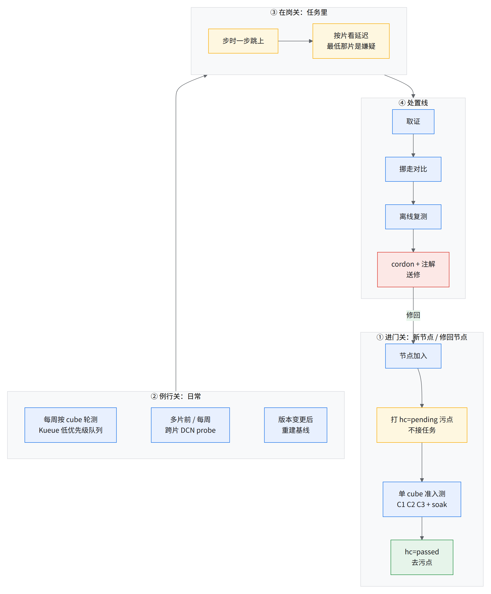
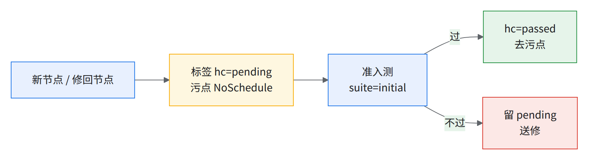
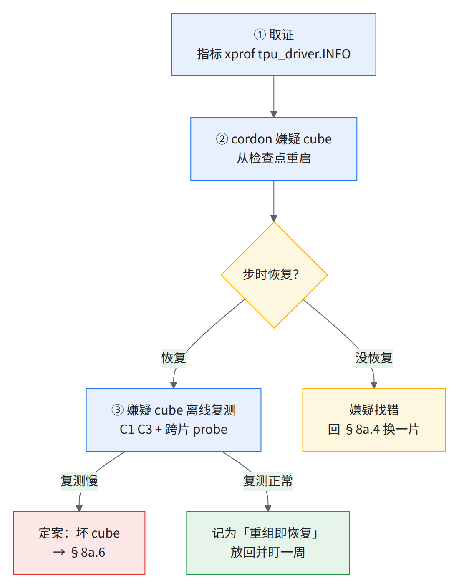

08a 慢节点 / 慢片标准流程（使用方上线 + 日常运行）
要解决什么
- 慢节点不报错、不挂、健康信号全绿，只有多片任务的步时变慢。最慢那片决定全局步时，step 日志看不出是哪片。
- 例：一个多片作业里有一片落在坏 cube 上，步时慢了约二十倍，挪走后恢复。
难在哪
- 平台信号说谎：partition 标签 HEALTHY、平台 ICI 诊断全绿、DCN RTT 不变时照样一片慢（经验教训第 48 条、经验教训第 45 条）。
- Google 遥测漏报降频：另一个集群因掉队被下线的十几台机器里，几台送去烧机测试才查出是 HBM 降频，Google 遥测起初没看到。
- 单 cube 自检没抓到上面那个坏 cube：自检只在一个 4x4x4 内跑，它被报成「DCN 通信时间很长」；跨片 probe 才量出根因在片内 ICI（片内 psum 5.8 GB/s，其余各片约 70 GB/s），它的 DCN 和别人一样。
💡一句话结论
- 三道关 + 一条处置线：进门关（准入测）、例行关（每周按 cube 轮测）、在岗关（任务里按片盯）；疑似之后一律「取证 → 挪走对比 → 离线复测 → cordon 送修 → 修回再准入」。
- 定案靠离线复测，不靠「挪走后好了」：先例里重组切片本身就能恢复，挪走变快不能证明硬件坏。
- 本流程把 runbook 已有的尺子（04 C1/C2/C3、DCN 基准、08 掉队阈值）和一套参考做法（hc 污点准入、按 cube 周期测、跨片 probe）串成一条线；跨片 probe 的阈值目前没有，要先攒基线（§8a.7）。
总流程

读图：①②是「人没上任务之前」把慢的筛掉；③是漏网之后在任务里发现；④是确认和处理，修回的节点重新走①。
8a.1四把尺子
各量各的，不能互相比数：同是 16384 的 bf16 GEMM，CHS（Cluster Health Scanner，Google 的集群健康扫描工具）一例是 1,039.04 TFLOP/s/device，本书 C1 是 1,713–1,730 TFLOP/s/chip，程序和口径都不同 源scripts/04-bench/thresholds.csv。每把尺子各自建基线。
| 尺子 | 量什么 | 范围 | 抓得到 | 抓不到 | 在哪 |
|---|---|---|---|---|---|
| C1 / C2 | 每芯片 matmul、HBM 带宽 | 每台 host 一个值 | 降频主机、坏芯片 | DCN、片间 | 04-bench.sh 的 c1 模式（C2 HBM 含在里面），阈值 thresholds.csv |
| C3 | 片内 all-reduce busbw | 每片一个值 | ICI 链路慢 | DCN | 同上 |
| DCN 基准 | 跨片 DCN all-reduce | 每次一组片 | 整体 DCN 退化、网卡模式 | 哪一片慢（只出总数） | 自备（04 §4.8） |
| 跨片 probe | 片内 ICI psum 256 MiB；跨片 DCN psum 64 MiB 和 1 MiB | 每台 host 一个值，带片号 | 哪一片 / 哪台 host 的 DCN 慢 | 无阈值（§8a.7） | 可选，本书无脚本（自建 probe，§8a.8） |
- 编号别对错：本章的 C2 = HBM 带宽，用
04-bench.sh … c1就测了；脚本里一维 ICI 那个模式叫ici1d，和 C2 无关。 - 一套现成的 cube-check（Google CHS 镜像
accelerator-microbenchmarks+ 运维包装脚本）lite 套件 =info gemm hbm psum，和 C1/C2/C3 同类，作用相同。 - 跨片 probe 补的是 DCN 基准不分片的缺口。
8a.2使用方上线：T0 前和第一周
T0（reservation 生效时刻）前（04 章验收时顺带做完）
| # | 做什么 | 判据 | 出处 |
|---|---|---|---|
| 1 | 每个 cube 跑 L3：./04-bench.sh run 4x4x4 c1c3 |
C1 每台 host、C3 每片过 thresholds.csv |
04 §4.3 |
| 2 | 每台 host 加 ≥ 4 分钟持续段 | 降幅相对机队中位，不按温度 | 经验教训第 45 条；注 1 |
| 3 | 按片数跑 DCN 基准 | 按片数用自建的 DCN 阈值表（下载包的 thresholds.csv 不含 DCN） |
04 §4.8 |
| 4 | （可选，本书无脚本）跨片 probe：交付形状全片跑一次 | 只记录，存每台 host 的 dcn 中位，作基线。没有 probe 时退一步：第 3 行 DCN 基准的总数当基线，分不出哪一片 | §8a.7 |
| 5 | 冻结三份阈值的 git commit，随交付记录存档 | — | 04 冻结条 |
| 6 | 和使用方约定功耗档 | P7 时掉队判据换「和自己的 P7 基线比」 | 08 §8.1 掉队阈值 |
- 注 1：C1 目前没有持续段；gemm_throttling 要
--duration_s=240才到热稳态。并进 C1 之前先单独跑。
第一周（T+1 到 T+7）
8a.3日常运行
进门关：新节点 / 修回节点自动挡住（参考做法）

- 准入状态可以用一对标签 / 污点表示（如
<域名>/hc=passed|pending，另记 pending 原因和最近一次结果）。 - 这道关的自动化（打标签 / 打污点 / 判定的控制器）按需自建。键名按你们的命名规范定。
- 不做自动化也能手工走：准入测过了，由使用方 SRE手工去污点：bash
kubectl taint nodes <节点> hc=pending:NoSchedule- # 去污点；键名按你们实际打的改 [推断，未实测] kubectl label nodes <节点> hc=passed --overwrite - 修回节点不经准入直接接任务，等于把刚送修的毛病放回来：送修回来的节点只过了 burn-in，而 burn-in 会漏过 HBM / 热降频。
例行关：每周按 cube 轮测
| 项 | 做法 | 出处 |
|---|---|---|
| 单 cube | C1 + C2 + C3 + ≥ 4 分钟持续段，每 cube 每周一次 | 08 §8.4 每周 |
| 跨片 | 每周一次，用空闲或备件 cube 组 2–4 片跑自备的 DCN 基准（04 §4.8，只出总数）；分片的 probe 可选，本书无脚本 | 频率 [推断] |
| 怎么排 | Kueue 单独队列 + 低于生产的优先级，测完立刻还。本书 03 已备好 LocalQueue hc（03-kueue-queues.yaml.tmpl）和 priority health-check（03-kueue-priority.yaml），未实测；没 apply 时退用 low |
队列 hc、priority health-check、按 cube 钉 partition id |
| 测完留多久 | 跑完后先占着约 15 min 等判定再删 | 保留时长做成可配参数 |
- 不能和任务同跑：CHS 要独占 cube。所以只能轮转，排不进去的 cube 记下来，下周优先。
- CHS 只支持 4x4x4，Kueue webhook 可能把它挂住。用 04-bench 不受这条限制。
- 版本变更后重建基线：换 jax / libtpu、控制面升级之后，阈值作废，全部 cube 重测一轮（经验教训第 45 条；08 §8.3）。
每天
- 有硬件故障类终止的节点要 cordon。可以用一个服务账号对
FAILURE_INFRA类终止自动 cordon。 - 自动 cordon 按需自建。没有时由使用方 SRE看告警 #19 / 日报后手工
kubectl cordon <节点>。 - 08 日报照跑；cordon 后配额按 min(128, 健康 − S) × 64 重算（08 §8.4）。
8a.4在岗关：任务里怎么发现
| 信号 | 看什么 | 说明 |
|---|---|---|
| 步时一步跳上并持续 | step 日志 | 步时跳高约三成、持续一个半小时左右；另一例步时跳到原来的约二十倍（开头那个坏 cube）。两例都和快慢步交替不是一回事 |
| 按片 collective 延迟最低 | collective_end_to_end_latencies 按 slice 分组 |
嫌疑片。4 片任务里 slice 2 降了一半多、其余涨 |
| 同一片 duty cycle 最高 | TensorCore duty cycle 按 slice | 和上一条同时成立才算 |
| 掉队主机 | tensorcore_utilization 按 pod |
片内个别 host |
| DCN 收尾等得久 | xprof 里 host recv-done | 片间等待的旁证 |
为什么慢的那片延迟反而最低：集合通信要所有片到齐才收尾。慢片最后到，一到就收尾，几乎不等；快片早到，全在等它。所以「等得最少」的那片就是拖后腿的 源08 §8.1 掉队阈值。
别信的信号：partition HEALTHY、gke-tpu-ici-resiliency 标签、平台 ICI 诊断全绿、DCN RTT 正常 —— 先例里这些全正常（健康信号会说谎，见经验教训第 48 条）。
8a.5确认：先取证，再挪走，再离线复测

- 先取证：遥测会过期。按片指标、xprof、应用日志、所有 VM 的
tpu_driver.INFO（worker 0 优先）（经验教训第 45 条）。- 怀疑 DCN 时按需采样：常驻监控没有主机粒度的 DCN 网卡计数。备一个按作业触发的采样 DaemonSet：nodeAffinity 只列该作业的主机、hostNetwork，对两块 DCN 网卡每 1 s 读一次计数、每 120 s 上传，采完即删。触发方式可以是给嫌疑 pod 打注解；采样程序按此自建。
- 挪走对比：cordon 嫌疑 cube 的 16 个节点，任务从检查点重启。实测的坏 cube 就是这样确认的。
- 离线复测才定案：
- 挪走后变快，可能只是切片重组了 —— 先例里同一批节点、同样 rank 重启就好了（"the re-formation of the slices, not a change of hardware"）。
- 所以对嫌疑 cube 单独跑 C1 + C3，再和一个已知正常的片组跨片 probe。复测慢才算坏 cube。
- 复测正常：放回，在该 cube 的体检记录里记一笔，一周内同一 cube 再进嫌疑名单就直接送修 [推断]。
- 片多时：先靠按片延迟缩到一两片再挪，别二分 —— 每次重启都是一次从检查点续跑（10+ 片任务二分要好几次重启）[推断]。
8a.6处置与放回
| 步 | 做什么 | 出处 |
|---|---|---|
| 1 | cordon 整 cube，注解写：原因、证据链接、谁、时间 | 自动 cordon 的话，用注解区分「已执行」和「仅建议」 |
| 2 | 重算 Kueue 配额 | 08 §8.4 |
| 3 | 送修：交给 Google（08 §8.5）；理由不要写 "Please run burnin…"，否则会被送回服务 | — |
| 4 | 性能类故障标 cloud.google.com/fault-behavior=performance（打在哪个对象 [需验证]） |
— |
| 5 | 修回 → 打 pending → 走进门关 → 过了才去污点 | §8a.3 |
| 6 | 记账：每次事件一行（时间、cube、信号、复测结果、处置），周会看 | 08 §8.4 每周 |
修理和回池由 Google 处理。使用方三件事：修回的 cube 先走进门关，再放低优先级或小任务跑一段才进大任务（先例：过了 60 min 压测，放回大任务一个半小时后复发）；同一台同症状第 2 次送修，要求换件，附上次维修记录（见经验教训第 50 条）；回池进度按 08 §8.4「已修未回池」 逐台跟。
8a.7阈值：有的和还没有的
| 尺子 | 阈值 | 状态 |
|---|---|---|
| C1 matmul（默认档） | bf16 32768：pass ≥ 1,730、warn ≥ 1,620 TFLOP/s/chip；片内极差 pass ≤ 1.03 | 有，thresholds.csv，[推断] 起草 |
| C1（P7） | 和这台自己的 P7 基线比，偏离 > 2% 报；跨 host 只报 > 8% | 有，08 §8.1 [推断] |
C2 HBM（04-bench.sh … c1 里测） |
pass ≥ 5.0、warn ≥ 4.7 TB/s/chip | 有 |
| C3 片内 AR | 4x4x4：pass ≥ 330、warn ≥ 290 GB/s busbw | 有 |
| DCN 基准 | 按片数分几份（自建） | 有，小规模几份全是 [推断] |
| 跨片 probe | 无 | 参考做法的 probe 只打印数（中位 / 最大 / 最小 / algbw），没有判定 |
| 在岗按片延迟 | 无绝对值，只用相对：最低那片 + duty cycle 最高 | 要看的两个指标来自经验教训第 45 条，方向（最低 + 最高）见 §8a.4 |
- 阈值全部绑在 jax 0.11.2 / libtpu 0.0.49 上；换版本先重测（thresholds.csv 头注）。
- 跨片 probe 先攒 2–4 周基线，再按「离同片 host 中位 > X%」定线；X 现在定不了 [未核]。
8a.8缺口与未核
- 跨片 probe 还没进 runbook 脚本（§8a.1 / §8a.2 / §8a.3 标「可选，本书无脚本」）：自建时建议拆成生成 / 收集 / 汇总三步，输出按片、按 host 的离群表。
- C1 没有持续段（§8a.2 注 1）。
- 本书自己的多片实测运行（06c 的 JIT 基线作业）里，「一片拖全局」既没证实也没排除。